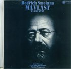
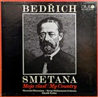
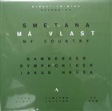

Work in progress, last edit October 13, 2026.
Surprisingly, not so many recordings of a complete Má vlast cycle were done in analogue era and only a few of them are satisfying. This page should give a complete list; early mono recordings as well as later digital recordings are left out. I aim to compare the sound quality of these recordings rather than musical ones, as this sort of infomation seems harder to be found. I compiled relevant comments found on internet and added my own observations for the recordings I listened to.
Here I share short samples from the releases currently at my possession (plan to do more). They should allow you to easily compare the recordings sound-wise. All releases were sampled with the same equipment, natural volue preserved, no normalization / RMS matching whatsoever. I deliberatly provide only mp3 (320 kbps), as the differences are big enough to be noticeable even in a compressed format.
| Release | 1 – Vyšehrad, harp intro | 2 – Vyšehrad, before fall | 3 – Vltava, polka | 4 – Šárka, finale |
|---|---|---|---|---|
| Neumann 1972 | ||||
| Neumann 1975 | ||||
| Berglund 1979 |
The cycle consists of six parts, which are traditionally fitted on four or even just three LP sides. However two parts are too long (about 28 minutes) to fit on one side without compromising the sound quality. As all parts culminate in a romatic forte finale, it is clear they cannot be cut with all due dynamics without hitting distortion in inner grooves. The cycle would deserve 3 LPs, but only one such edition exists and unfortunately it was released in a very limited volume.
This has been released many times since 1958 and a modern reissue by Speakers Corner exists as well. Reportedly they all differ in sound. Analogue Anorak mentiones that the early Ace of Diamonds stereo pressing (mid 1960s, grooved label version) has brittle string sound, while the mono re-press from the same period sounds better. The mid 1970s budget release, cut with an improved head, has a better string sound, but is still not perfect.
Based on Decca 1992 digital release, I confirm the sound is not exceptional and therefore I am not convinced to invest in the Speaker's Corner LP reissue. Musical qualities are indisputable though.
I remember the original DG release had narrow, nasal sound, especially in the strings. Analogue Anorak reports that the Original Source Series reissue sounds good overall but still mentiones severe issues, mainly inner groove distortion on sides 2 and 4. These sides are cut to the very limit, prioritizing dynamics at the expense of the inner groove problems. This is the very opposite of how Berglund EMI recording is cut.
Subpar string sound, similar to that of Kubelík's 1971 Deutsche Grammophon recording, but a little more bearable.
I have not heard this on LP yet, just the DSD release. Compared to the later 1975 Neumann recording with CPO, this one has has slower tempi and even a little more pathetic spirit. The sound on DSD is more direct and clear, with wider stereo image. Mids sound more natural.

Originally a TV recording and that's exactly how it sounds like. Direct dry sound, compressed dynamic range, prominent and unnatural mids, not enough bass extension. Tympani sound like .. on TV. They probably did not plan to release it as a commercial LP first. Panton used the recording only 9 years later for a gift LP and even later it was released for normal distribution. At that time the 1975 Supraphon recording was already available which offered better quality. Despite this, the recording has been released a few times since then.
The last analogue recording by this orchestra. In general, it is similar to the 1972 recording (the same conductor, orchestra and hall; different recording crew). It has broader sound, more dynamics, more bass, more ambience and space, however mids sound still unnatural in some passages. Lush hall sound which means the recording can be a little too distant at times. Darker sound with no sparkle in strings or woodwinds, unless percussions appear. One of my favourite recordings at the moment, together with Berglund EMI.

For me, the interpretation is a little on the mechanical side rather than magical, so I have not dived deeper into it yet. The YT sample sounds promissing as for sound quality.

A direct-cut release on three LPs at 45 rpm, the holy grail. It was a limited edition and is no longer available at a reasonable price.
Released in 1965 as two independent LPs. Má vlast squeezed onto 3 sides. Only the first LP re-released later. I have not heard it yet, it wouldn't be easy to get a perfect copy given it is from 1965.
Dave Hurwitz reports that the later digital release of this recording is great. It mentions the original vinyl did not sound so good, it is not clear if it was due to his equipment at that time or due to the actual LP quality. Only quadrophonic release on LP exist.
Má vlast is fitted on three sides up to 28 minutes long. Even though, the cutting engineer decided to back up from the inner area and not to cut behind the 68 mm diameter. No inner groove distortion thanks to that, but the recording lacks the wild dynamics typical for classical Decca or RCA recordings. Other than this, the sound is natural and broad. To compare with Neumann 1975 recording, the sound is brighter (which is generally preferable), litlle closer and more detailed, the dynamics seems on par. Note that some later releases on LP are digitally remastered. Dave Hurwitz gives the digital release of this recording praise.
There is a notable Talich mono recording and one more Kubelik mono recording. There are many exceptional digital recordings, among them the Harnoncourt's or one more Kubelík's with CPO from 1990.